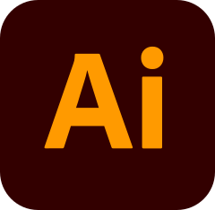
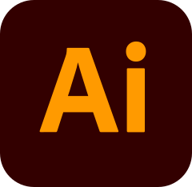

Помогаю стартапам и бизнесу создавать сильный визуал. Эстетичный, понятный и рабочий. Специализируюсь на дизайне и прототипах, которые упрощают путь пользователя и помогают брендам достигать своих целей. Дизайн должен быть не только красивым, но и умным.
я помогу вам с
01
дизайном
Я делаю веб дизайны, которые привлекут аудиторию к вашему бренду
02
разработкой
Разработаю веб сайт по своему или вашему макету
03
сопровождением
Сопровождение готового продукта по договоренности
design
 

своей работе я использую современные инструменты для дизайна. Figma — основной инструмент для создания интерфейсов и прототипов с удобным командным взаимодействием. Также активно применяю Adobe Photoshop для обработки графики и Illustrator для создания векторных элементов.
Varwin XRMS COMPONENTS
Varwin XRMS COMPONENTS
Varwin XRMS COMPONENTS
web


Для веб-разработки я использую современные и эффективные инструменты. Основу работы составляют HTML и CSS для верстки и стилизации. Sass помогает организовать код, а Tailwind и Bootstrap ускоряют разработку адаптивных интерфейсов. Для динамических элементов применяю Vue.js.
video
В процессе видеомонтажа я использую профессиональные инструменты. Adobe Premiere Pro — главный редактор для точного и детализированного монтажа видео. Для анимации и визуальных эффектов я применяю After Effects, а для обработки звука — Audition.
Varwin XRMS COMPONENTS
posters
Создаю поздравительные постеры в виде открыток на дни рождения и праздники. Это не просто макеты — это визуальные истории про людей, для которых они сделаны. Балансирую между юмором, эстетикой и смыслом, чтобы получилось не «дежурное поздравление», а вещь, которую хочется сохранить